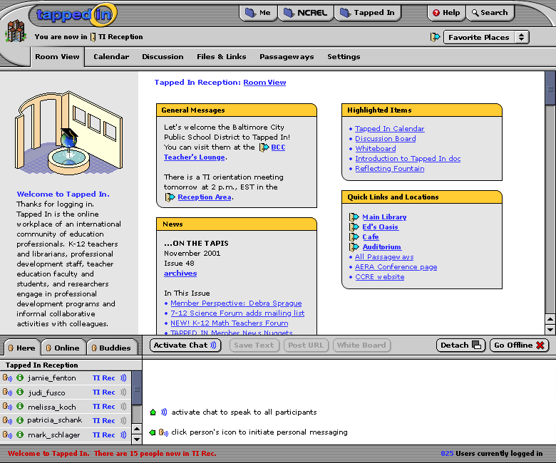
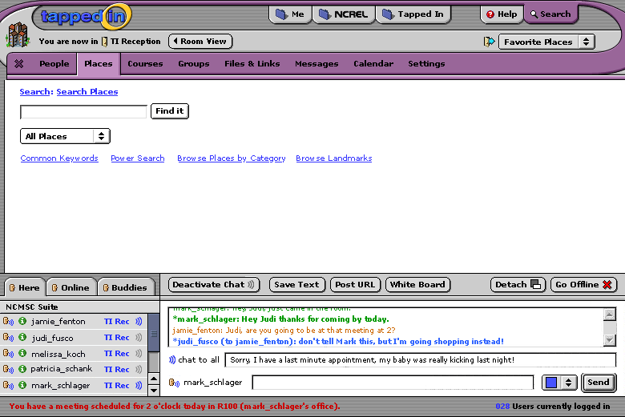

So Judi has always asked me to make sure TAPPED IN is spelled in all caps. I see several spots have it typed as Tapped In. Whichever way you decide is fine of course, so long as it's consistent. Guests and members tend to type it as Tapped In if that helps. I too wanted to pitch in, even though this isn't important yet :-). (note to Judi: I started this comment with SO for your enjoyment)
Wow, this is awesome. I love how we yak about stuff and then it appears here. That is so cool.
Re: Chat... What happens to the going on/offline when your chat is detached? Just wondering...
I'm also loving it..thanks for allowing me to observe the progress of TI2. Tiny typo in Welcome to TAPPED IN:
...and researchers engage[d] in professional development...
I know this isn't important at this stage...just makes me feel useful :-)
Parts 1, 2, and 3 put together
An example of an overlay.
Here are the notes that Aaron wrote up from our meeting on 11/21:
1. 2 vs. 3 modes of synchronous activity
We discussed the idea that 2 (go live/close chat) modes made the most sense. To make a long story short, we talked a lot about the complications that would arise in the 3rd mode (PM/no chat), and that it seemed to make more sense to have a simple distinction of either being on or off. We were finding it difficult to differentiate between going online and activating chat and thought this might make it tricky for users.
2. Room Subnavs (including course and group rooms)
After making a final list of the subnav menus for both room menus and content tab menus (e.g. "me", "tapped in"), we realized there was going to be some confusion. Some items change from menu to menu, while others remain constant but serve different purposes (e.g. \"calendar\" exists in both rooms and tab menus and refers to different items, meanwhile choices like "people" and "places" only appear in one). This coupled with the fact that the same screen area is being used for both lists, we decided to revert to an earlier idea (a common theme here): do not use a subnav for rooms in the same way. All items can immediately be linked off of the "room view" content screen. On secondary level pages, like if you have clicked on "directory" in a group room, the screen area currently being used for the room image and introductory text on the room view page then \r\nbecomes a horizontal navbar for room contents. This way, when you \r\nfirst travel to a room, you are only shown the \"room view\" and \r\nhighlighted items. For rooms with more going on, like course rooms, \r\nthere can be a secondary navigation that appears on lower level \r\npages, but this navigation does not have to be consistent from room \r\nto room, nor will it appear in the same area as the content tab \r\nsubnav overlays. (insert breath here)
3. Final subnav for content tabs
We realized there needs to an "overview" page for each item; on search and help this would be called "all". The final topics are: Overview, People, Places, Courses, Groups, Files, Links, Calendar, *Settings, *Discussion. Discussion Boards ("discussion") only appear on search and help. Settings exist only on "Me" and on tenant and ti tabs for administrators.
4. Concept of "scratch pad" for chat window and other advanced features
There are some extended or expert-mode features of chat that would require additional screen real estate. Font size is one. We also discussed an idea of an additional text field that you could use as a scratch pad for assembling messages while continuing to chat in conversation. One solution for this is to have these items appear as a pop-up window (with accompanying "advanced features" button on interface) if your chat interface is attached. If you are detached, these items can just show up in the new window all in one place.
5. Saved messages, i.e. PM's that have come to you while you were logged off, are accessible off of "Me" overview page. Make a button on the chat interface that links you directly there if you have any waiting for you when you login. (saved messages). These are a subset of the term "messages" which is a general word for any announcements throughout TI.
6. UI needs a logout button
7. change "personal message" to "private message"
8. Make room view white space look more "physical"; thumbtacks, wall color, etc.
9. Animate the tapped-in globe/fountain!
10. Bread crumbs exist in content windows (content refers to overlay information accessible through tabs as opposed to room items) as well as room windows.
11. Get rid of "save text" on chat window.
12. Put PM asterisk next to name in PM chat field (as well as in text \r\nfield as it is now)
13. On room view content, take whiteboard out of highlighted items list. Move "links" into "highlighted items" and have "locations" be its own topic- actually this should be called "places" for consistency's sake.
14. For group pages (and other rooms in some cases) also include: office hours, contact info, # of members currently in room, # of members currently online, date of your last visit, some kind of daily highlight/post?